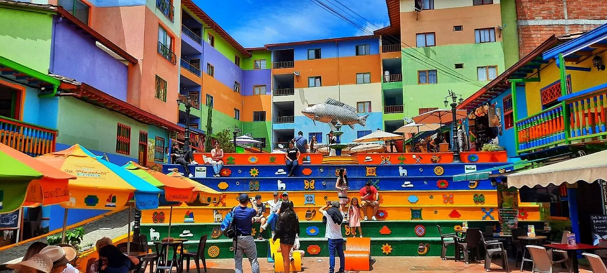

Guatapé · Colombia
Het dorp Guatapé is misschien wel de meest kleurrijke stad van Colombia. De onderste helft van elke gevel is versierd met reliëffriezen (zócalo's) — kleine, levendige panelen die scènes uit het dagelijks leven, dieren, bloemen of abstracte patronen afbeelden. Elke straat is een explosie van kleur en creativiteit.
Wandel door de kronkelende straatjes, bewonder de zócalo's (er zijn honderden unieke), bezoek de kerk op het centrale plein en neem een bootje op het meer. Het dorp heeft ook goede restaurants langs het water en is een ideale plek om de namiddag te spenderen na de klim van La Piedra.

Guatapé to climb the stone monolith and enjoy 360-degree views of the sprawling lake that embraces a maze of peninsulas and islands. Days to Travel Around
After finding your bearings in Medellín and visiting Guatapé, continue eastward to bathe in the crystal-clear waters of Río Claro, which flow through a jungle-clad limestone canyon.
Head south and then west over the Páramo de Letras to Manizales to check out its urban nature reserves and soak in the thermal baths.
After a day trip to the peaks of the Parque Nacional Natural Los Nevados, take the short trip south to Salento to spend your last couple of days learning about the coffee-growing process and hiking among the wax palms of the Valle de Cocora. to Explore
Begin in Medellín. Spend three or four days getting to know the city before taking day trips to Guatapé and Santa Fe de Antioquia to check out the classic architecture.
Next, pack your bags and head southwest to Jardín for an introduction to coffee country and some countryside walks. Visit the Cueva del Esplendor before taking the less-traveled unpaved road over the mountains via Río Sucio to Manizales.
End your trip with a multi-day trek through the Parque Nacional Natural Los Nevados to Salento via the stunning Laguna de Otún.
Guatapé’s zó calos Guatapé’s prettily painted houses are a far cry from the typical whitewashed buildings in most of Colombia’s colonial towns, let alone Medellín’s modern apartment blocks, but their most distinctive feature is their zócalos. These are colourful decorative panels, usually square, painted in relief along the base of the houses up to waist-height. Originally, they were all representations of the Lamb of God, and some do still have religious images on them.
• Neem de tijd om ALLE straatjes te bewandelen — elk heeft unieke zócalo-panelen
• Zoek de zócalo's met dieren en dagelijkse scènes — de vertelkracht is opvallend
• Een korte boottocht op het meer toont de schaal van het reservoir en het landschap
• Goed restaurant aan het water: meerdere visrestaurants langs de pier
• Daguitstap: vroeg vertrek vanuit Medellín, klim + dorp + terug om 15u voor de vlucht dag 11